A small home office usually fails one of two ways. It is so cramped that you avoid it, or so decorated that you cannot work in it.
The setups below manage both in a few square feet, with numbers you can use: desk widths, shelf gaps, clearances and bulb color.
These 31 setups run from pink desks and floating corners to closets, alcoves and built-ins. Read the five rules first, because they apply to every layout.
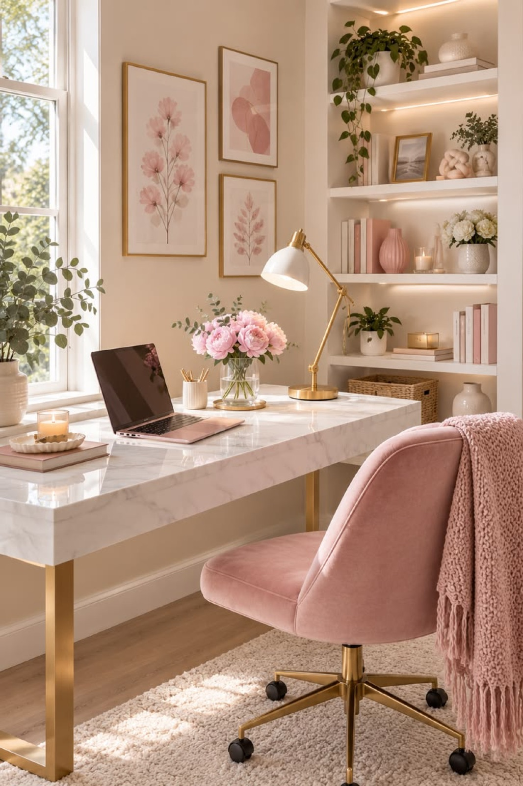
Five Rules for a Small Office That Works
- Measure the wall, then buy the desk. A desk 40 to 48 inches wide and 20 to 24 inches deep fits most nooks and still holds a laptop and a notebook.
- Keep the window at your side. Light from the left or right avoids screen glare, and a task lamp on the other side fills in the shadows.
- Build up, not out. Shelves about 12 inches deep, starting 15 inches above the desk, add storage without using floor.
- Give every surface one job. The desktop holds a laptop, a lamp and a notebook. Everything else lives in a drawer or basket.
- Choose the chair for comfort first. A chair you cannot sit in for two hours becomes a coat rack. Check seat depth, height range and back support.
Floating and Corner Desks
1. Wrap a Floating Desk Around the Corner
Corners are wasted in most rooms. A floating desk that curves around one gives you a work surface with an open floor beneath, like this wood desk with a slatted panel behind it.
Anchor it into wall studs with heavy-duty brackets and set the top 29 to 30 inches high.
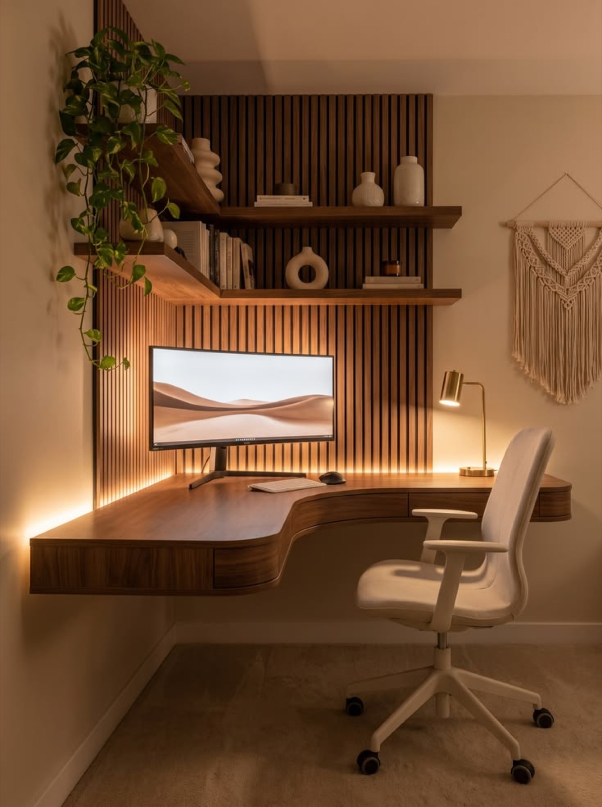
2. Fit a Real Desk Into a Nook
A tiny nook can still hold a real desk. A shelf desk about 36 by 18 inches fits a laptop and a notebook with no legs to bump, as in this corner.
Stack three shelves above it, about 14 inches apart, and keep the top one for light things like the dried stems and baskets here.
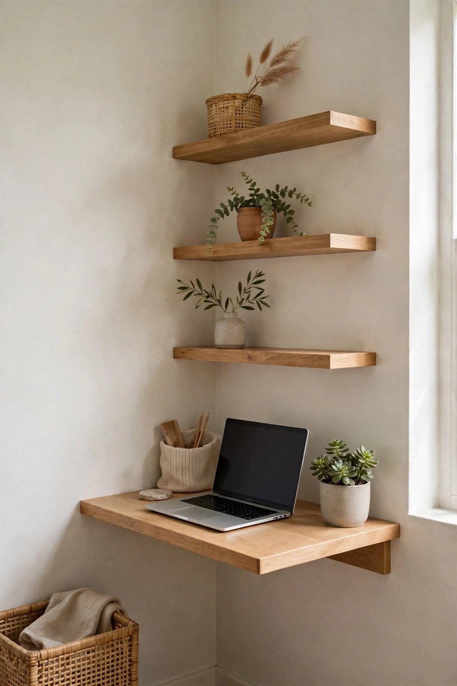
3. Size the Wall Desk to the Monitor
A wall-mounted desk only needs to be deep enough for the monitor. A depth of 20 to 24 inches keeps the screen about an arm's length from your eyes, as with the wide screen on this walnut shelf.
Walnut looks richer than laminate and hides scratches better than white.
Clip a light bar on top of the monitor, as here. It lights the keyboard without a lamp's footprint.
Place the desk so the window sits at your side. A screen facing a window washes out, and one facing away mirrors the room.
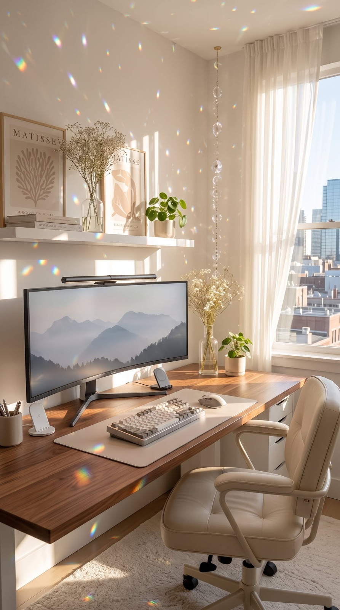
4. Fold the Desk Away at Night
If a room has two jobs, buy a desk that folds flat. A drop-leaf wall desk, like this one under a stack of shelves, gives you work depth when open and nothing when shut.
Choose hardware rated for at least 50 pounds and screw it into studs. A laptop and a mug weigh more than they look.
Keep supplies in the cabinet below so you are not unloading a surface every morning.
Check the door swing before you drill. A leaf that hits the door ends the idea.
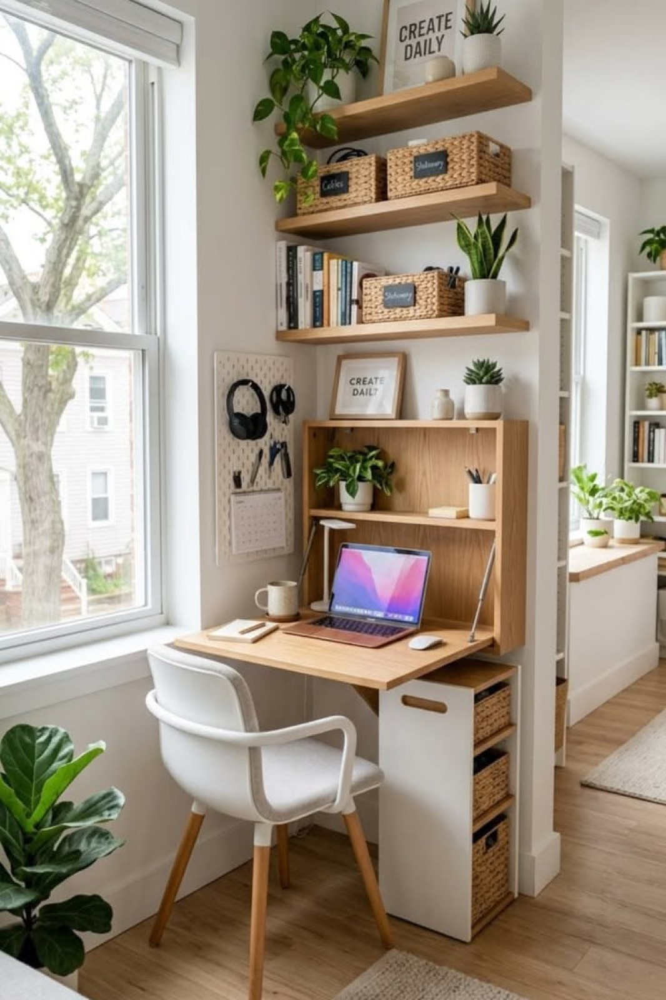
Closets, Alcoves and Awkward Rooms
5. Find the Dead Space in the Hallway
Hunt for dead space: a wide hallway, a niche, an old reading corner. An alcove only needs about 36 inches of width for a desk.
This one fits a desk, a cabinet below and three shelves above, with a light strip under the lowest shelf.
Put a power strip with USB ports inside the alcove so cords do not cross the floor.
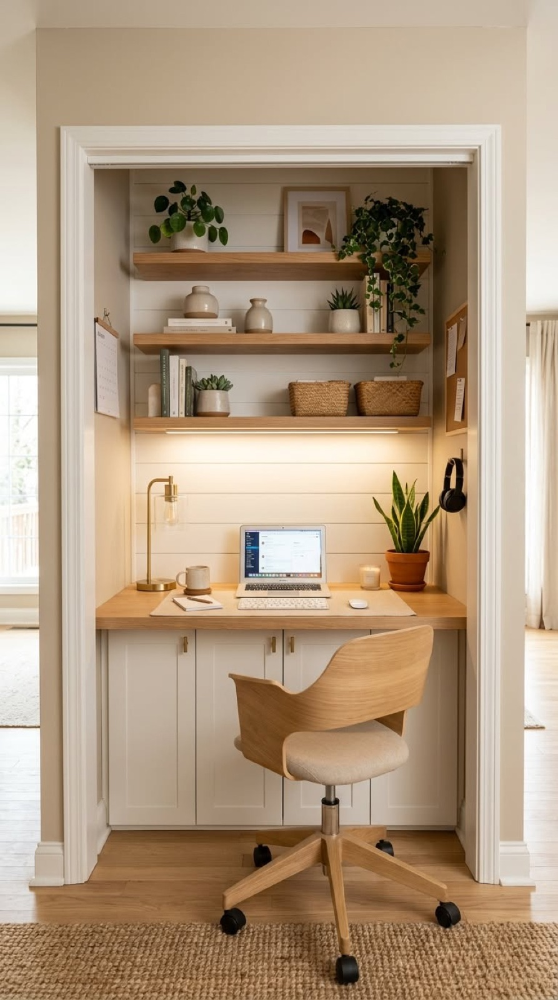
6. Turn a Closet Into the Office
A closet makes a good office because the doors close on a messy day. Take out the rod and shelf and fit a desktop at 29 inches.
Add a shelf about 15 inches above the desktop. This closet holds baskets and binders there, with a pegboard behind the screen.
If there is no outlet, a battery puck light fills in, and one hole in the back wall passes the cables through.
Leave the doors open while you work. A laptop in a closed closet runs hot.
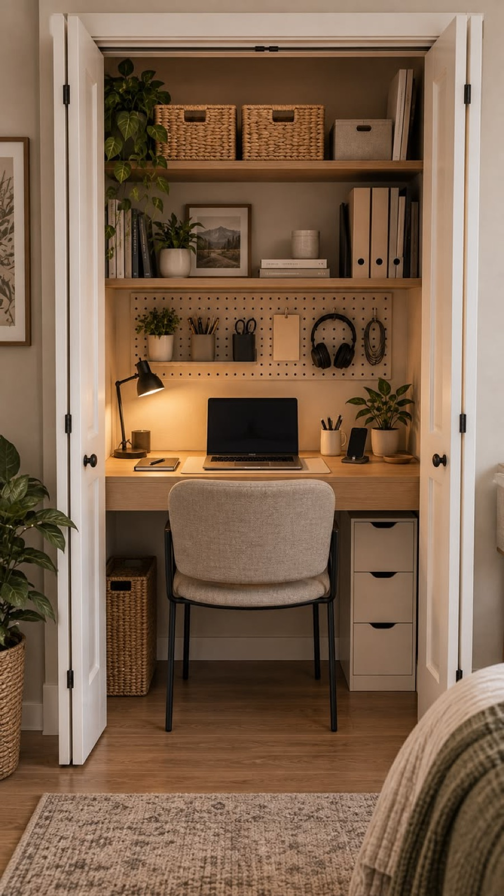
7. Make Standard Storage Look Custom
Standard storage can look custom. A white drawer unit under one end of the desk and a cushioned bench along the other use the whole corner.
Cover the wall above the desk in pegboard to hold scissors, tape and earbuds, as here.
Put baskets under the bench for paper you do not need every day.
Choose a chair on casters with an adjustable seat. The desk height is fixed, so the chair has to flex.
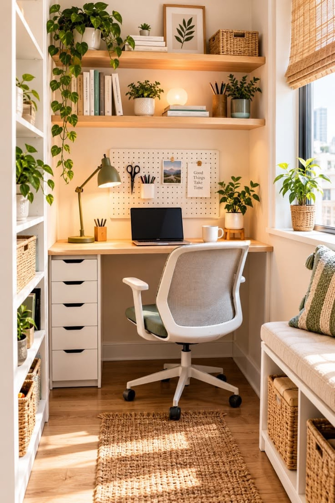
8. Mark Off the Bedroom Desk
A bedroom desk needs a boundary so work does not follow you to bed. A rug under the chair and a tall plant beside the desk mark the zone, as here.
Choose a desk with a drawer so papers go out of sight at the end of the day, and turn the chair so your back faces the bed.
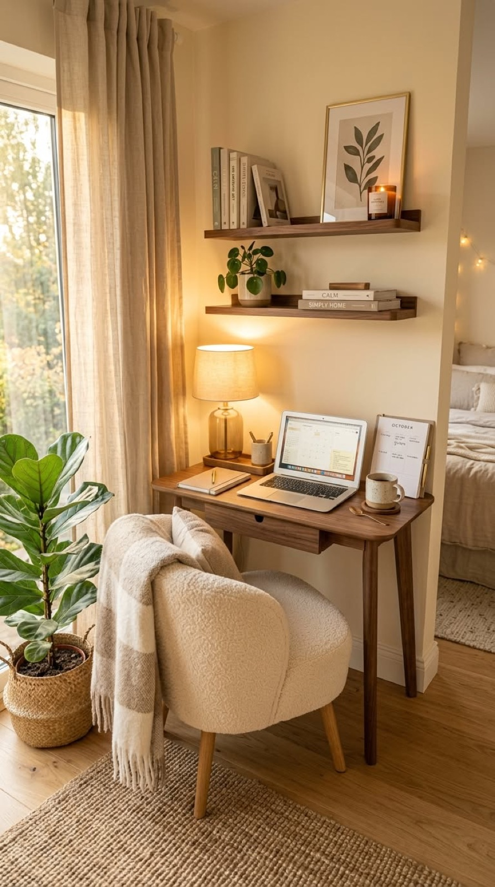
9. Run the Desk Down One Long Wall
Narrow rooms work when the desk takes one long wall and a clear aisle of 36 inches stays open beside it.
This room fits a reading chair and side table at the far end, which makes it a place to think, not just type.
A rug that runs the length of the room, like this one, makes the floor feel wider.
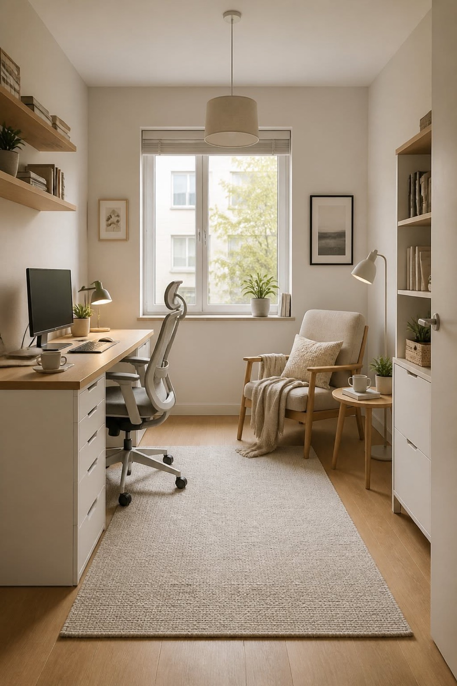
10. Split One Desk Into Work and Vanity
One long desk can handle both work and getting ready if you split it in half. Keep the monitor on one side and the mirror on the other, as here.
A riser with a drawer holds chargers under the monitor, and a small tray corrals makeup so the surface can be wiped clear in a minute.
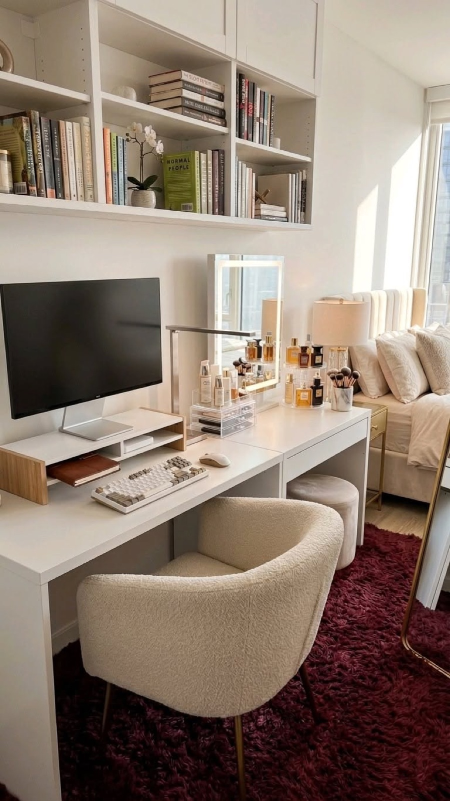
Blush and Pink, Kept Grown-Up
11. Keep Pink Pale and Textured
Pink works in an office when it stays pale and has texture. A blush desk, a boucle chair and one rose lamp read as calm here, not sugary.
Choose dusty blush over bubblegum, and repeat it only three times: desk, lamp, one accessory.
A fluted desk front, like this one, adds shadow and depth, so the pink looks richer than a flat panel.
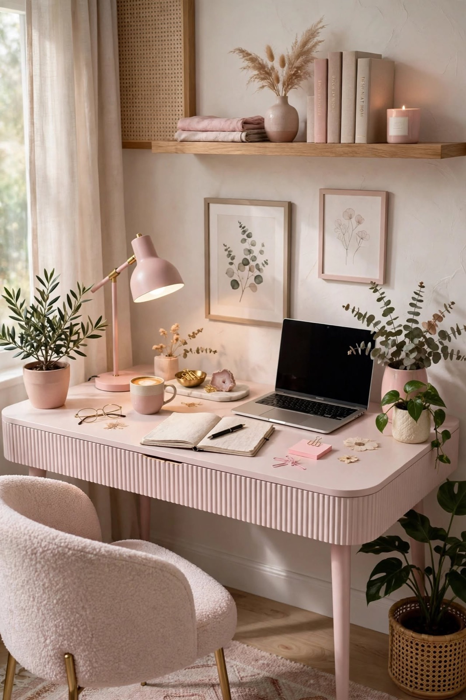
12. Get the Marble Look for Less
Want a desk that looks expensive without the price? A marble-look top on brass legs does it, and the shine bounces light around a small room.
Check that the top is sealed. Real marble stains from coffee rings, and a laminate look-alike hides them.
A muted pink velvet chair and a knit throw over its back finish the corner.

13. Choose a Slim Writing Desk
A slim writing desk makes a small room feel bigger, because you can see the floor under it. This white one has thin legs and two drawers.
Hang botanical prints about 2 inches apart in matching frames, and choose a washable fabric for the chair seat. It will see daily use.
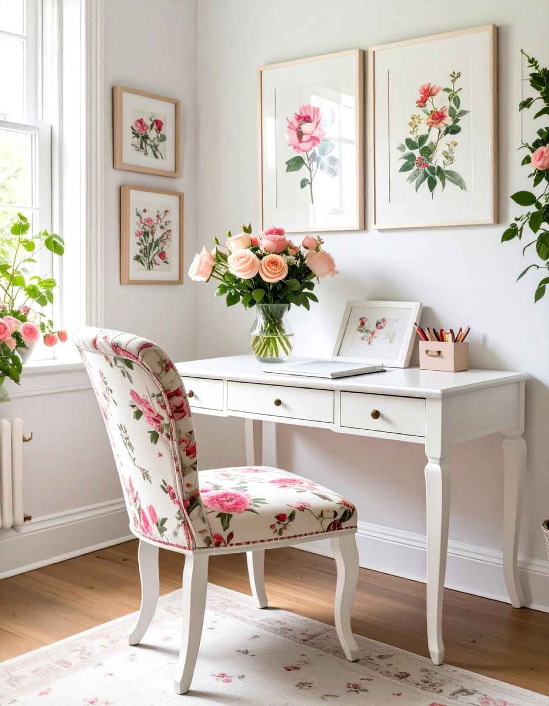
14. Paint Instead of Buying Furniture
Paint does more than furniture. A pink wall with simple wood molding squares makes a plain desk look built in.
Pick a warm pink with a gray undertone so it does not turn salmon in afternoon light. Test a sample on two walls first.
Cream trim and a cream chair keep the pink from taking over.
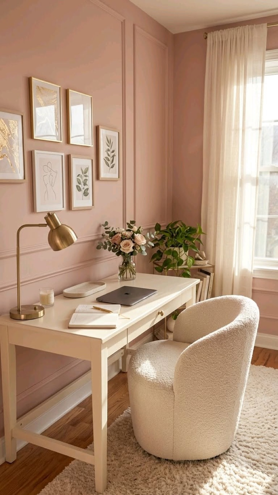
Pink Rooms That Work Hard
15. Face the Desk Toward the Window
A desk beside a window is worth more than any accessory. Daylight lowers eye strain and lifts the mood.
Set it so the window is to the side, not behind the screen, and keep the monitor out of the glare.
A bunch of grocery-store roses is the cheapest lift, as on this desk. Change the water every two days.
Keep the vase off the keyboard side. One spill ends a laptop.
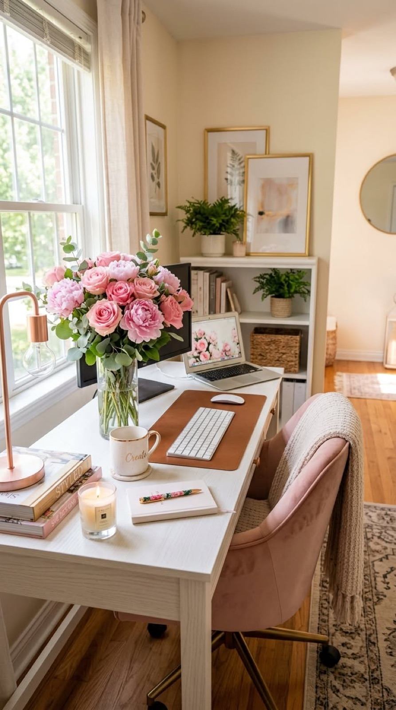
16. Add a Second Chair for Company
A second chair turns a work corner into a place for coffee with a friend. Choose one that tucks in when it is not in use.
Two shelves above the desk, about 14 inches apart, hold books and frames without crowding the wall, as on this pink wall.
Choose a different color for the guest chair so the corner looks collected. Pink and cream work here.
Leave 36 inches behind both chairs so people can walk through.
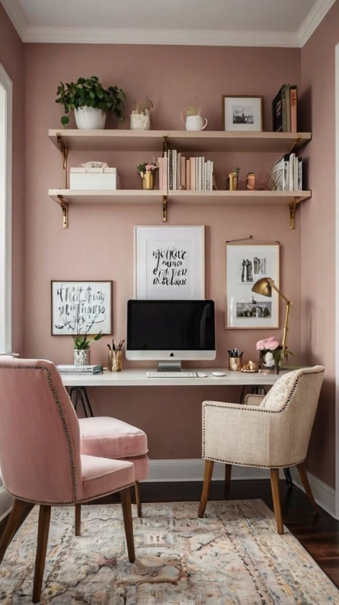
17. Keep Motivational Art Quiet
Motivational art works when it is quiet. Use one print with a short quote and let the rest be botanical or abstract, as the wall here does.
A rolling cart beside the desk holds supplies and rolls away when you finish.
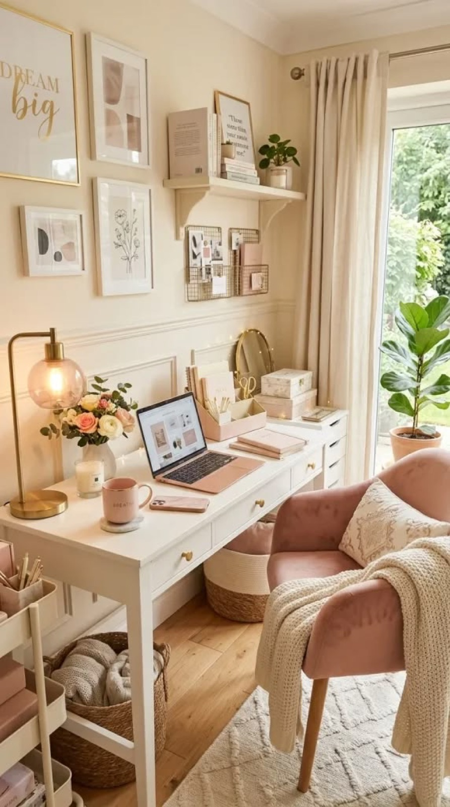
18. Light the Shelves From Underneath
Under-shelf LED strips give shelves a built-in look. Choose warm white at 2700K and a plug-in strip with a dimmer.
Keep the desktop clear except for the monitor and a lamp, as this long white desk does. The shelves can hold the clutter.
Mix the shelf contents: books, boxes and a plant, so the glow lands on different textures.
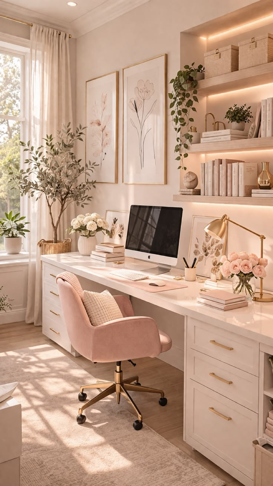
19. Warm a Pink Corner With Wood Slats
Wood slats add warmth to a pink room. Peel-and-stick slat panels work on rented walls and go up in an afternoon.
Run a warm LED strip behind the corner shelves, as here, for a glow that doubles as a lamp.
Choose a rounded desk edge in a corner so you do not catch a hip on it.
Hang a woven wall piece beside it. Hard wood needs something soft nearby.
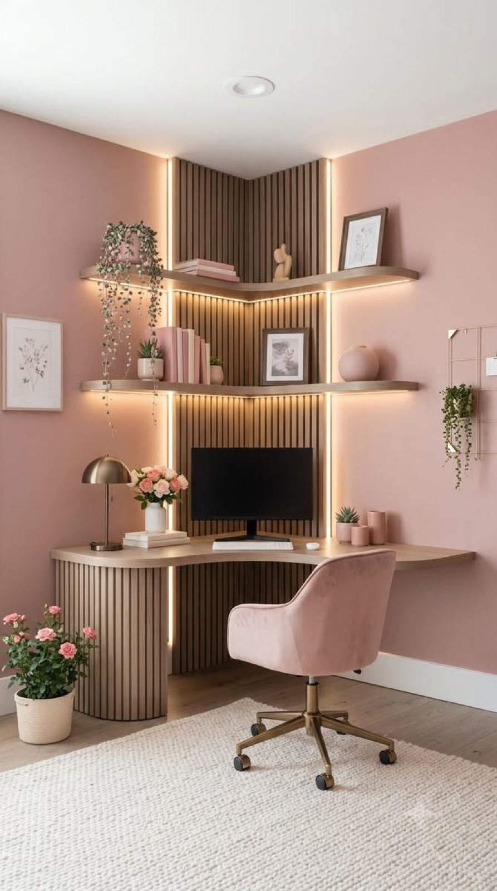
Walls, Shelves and Storage
20. Build One Big Board
Build one large board instead of a dozen small notes. A 3 by 4 foot cork panel with a few frames and cards on top looks planned, as on this sage wall.
Limit the board to two or three colors and rotate the cards monthly so it stays useful.
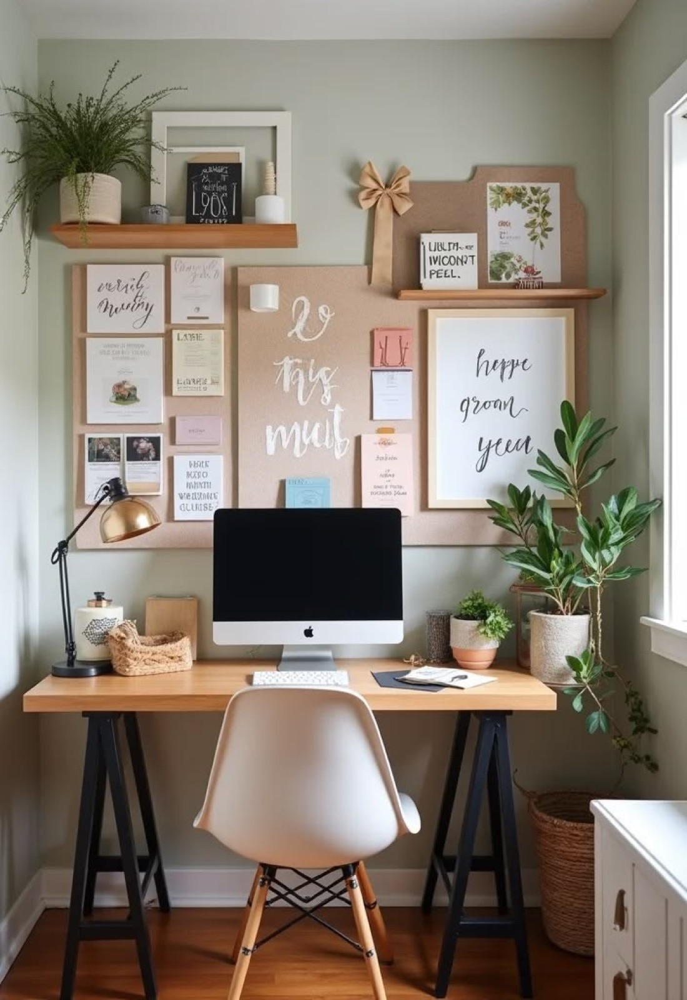
21. Trace the Frames Before You Hang Them
A gallery wall adds personality and takes no floor space. Lay the frames on the floor first, then trace paper templates onto the wall.
Keep about 2 inches between frames and make the whole group about two thirds the width of the desk.
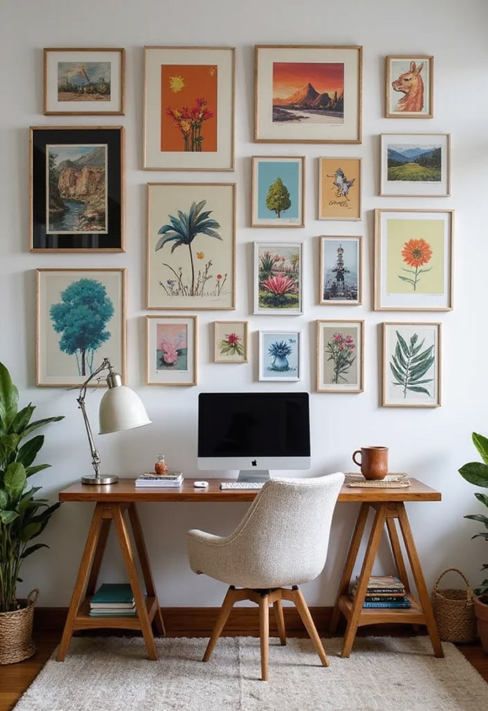
22. Clip the Plan to a String
Students and freelancers both need a plan they can see. Clip note cards to a string with mini clothespins instead of nailing up a board.
Keep the planner open to the current week and put the rest on a shelf, as this corner does.
Hang the string at eye level next to the screen so it sits in your field of view, not behind you.
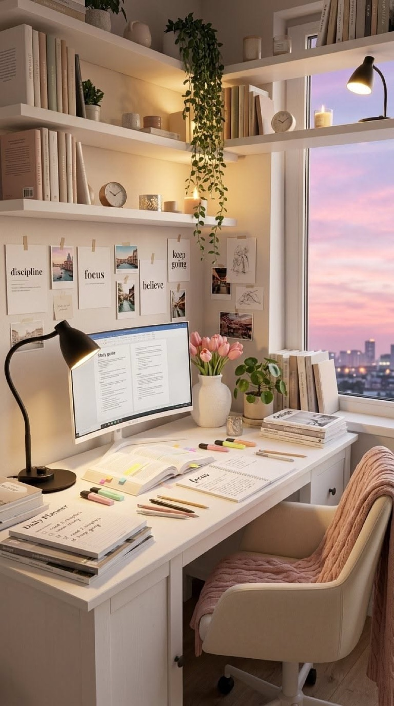
23. Keep Notes Off the Desktop
A pinboard keeps notes off the desk. A cork or linen board in a neutral tone looks polished beside wood.
Set the dome lamp on the far corner, as this desk does, so light falls across your work and not onto your screen.
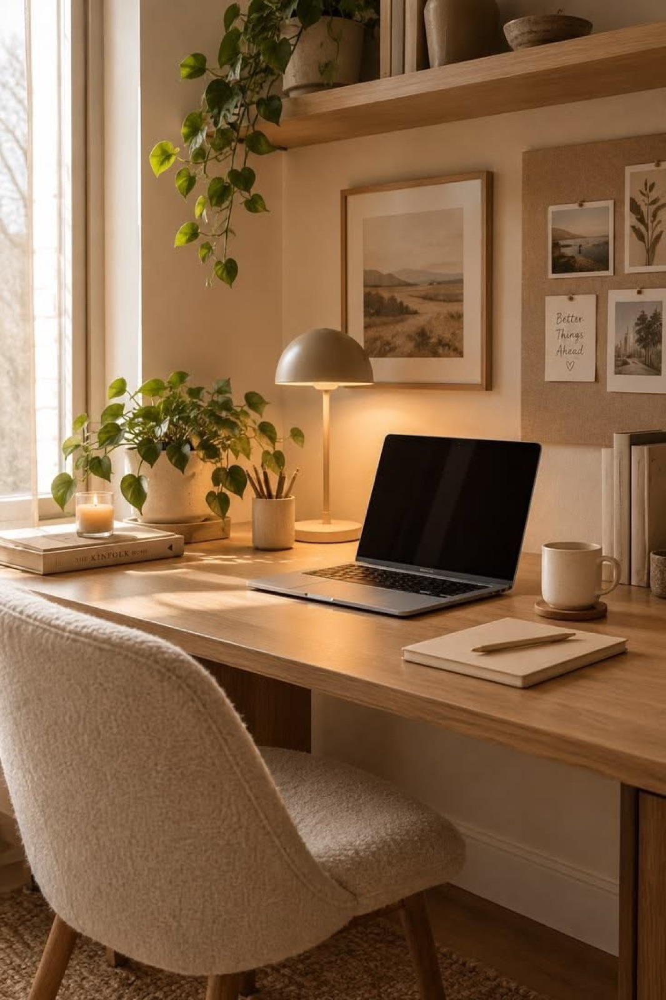
24. Free the Floor With Floating Shelves
In a small room, light wood and white walls keep the space airy. Floating shelves free the floor, as on this wall.
A basket under the desk holds cables and chargers so nothing trails across the floor.
Choose a desk with tapered legs. Thin legs let you see the floor and the room looks larger.
Keep a plant near one corner of the desk, as here, for something living without spending desk space.
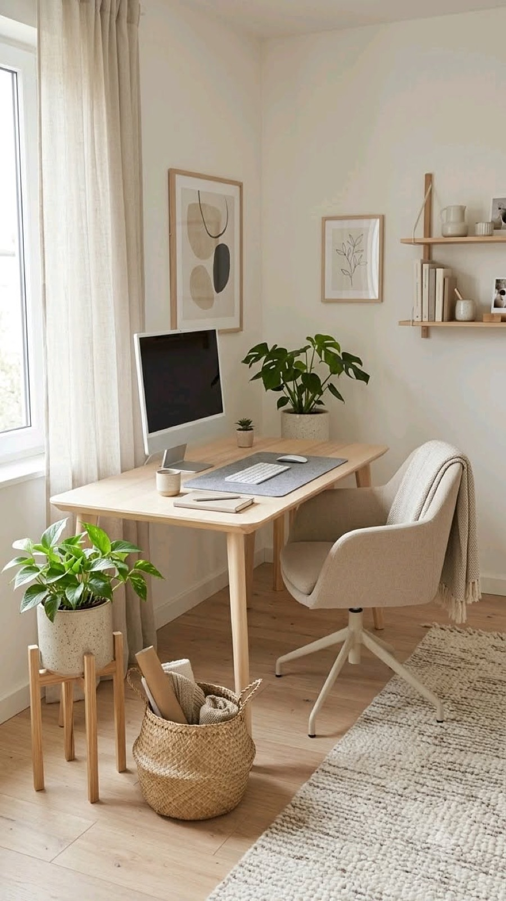
25. Paint the Bookcases the Wall Color
Floor-to-ceiling shelves add storage without feeling heavy if they are painted the same color as the wall, as in this cream room.
Put a cushioned bench at one end of the run for reading, and light the shelves on a timer.
Leave the center of the wall open for one framed piece so the shelves have a focal point.
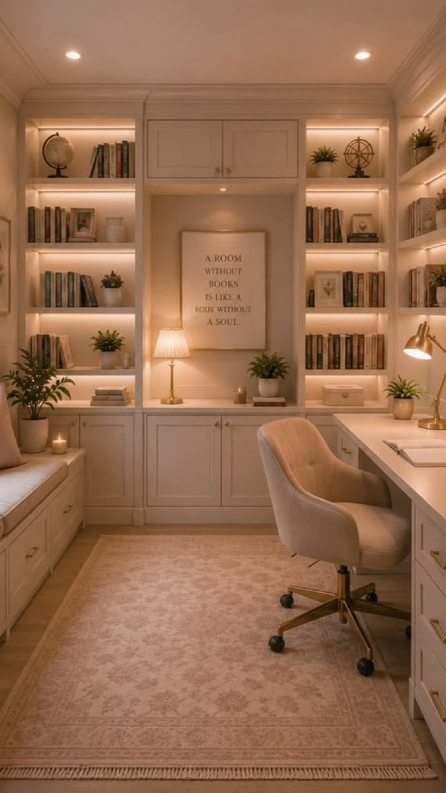
Neutral and Warm-Wood Rooms
26. Change the Pulls, Change the Desk
Brass pulls make a basic desk look custom. Swapping hardware takes about ten minutes with a screwdriver.
Measure the distance between the screw holes first, center to center, so the new pulls fit.
A rug big enough to hold the back legs of the chair, as here, makes the whole area feel designed.
Keep one metal finish across the pulls, the lamp and the chair base.
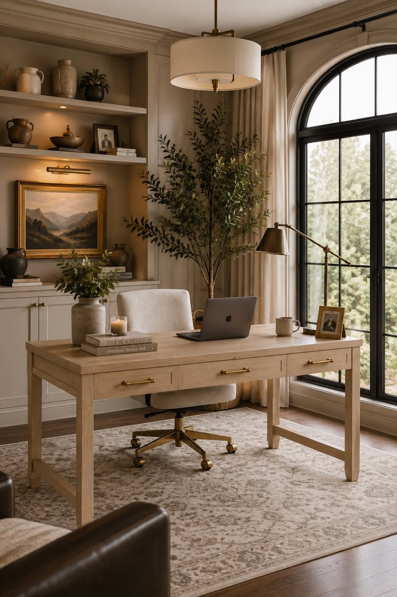
27. Get Depth From Texture in an All-Cream Room
An all-cream office gets interesting through texture. Boucle, jute, linen and wood give the room depth without color.
A woven roman shade softens daylight and cuts glare on the screen.
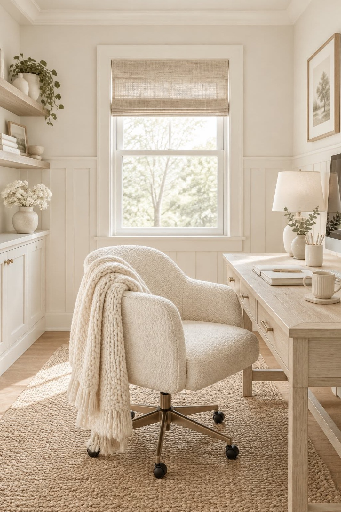
28. Limit Gold to One Finish
Gold shines in a small room, but it has to be one finish. This corner repeats the same warm gold on the frames, lamp, shelf and chair base.
Hang the lowest frame about 8 inches above the desktop so the art and the desk read as one group.
Black frames add contrast, as in this gallery wall, so the gold does not feel sweet.
Wipe brass with a soft cloth. Fingerprints show on shiny finishes.
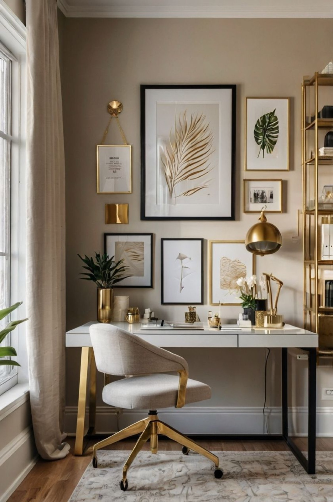
29. Build the Desk Into the Shelving
A long built-in can replace both the bookcase and the desk. Oak with an olive chair, as here, brings warmth to a bright room.
Leave a few shelves partly empty so the books do not dominate.
Run the work surface the full length of the unit so there is room for a laptop and paperwork side by side.
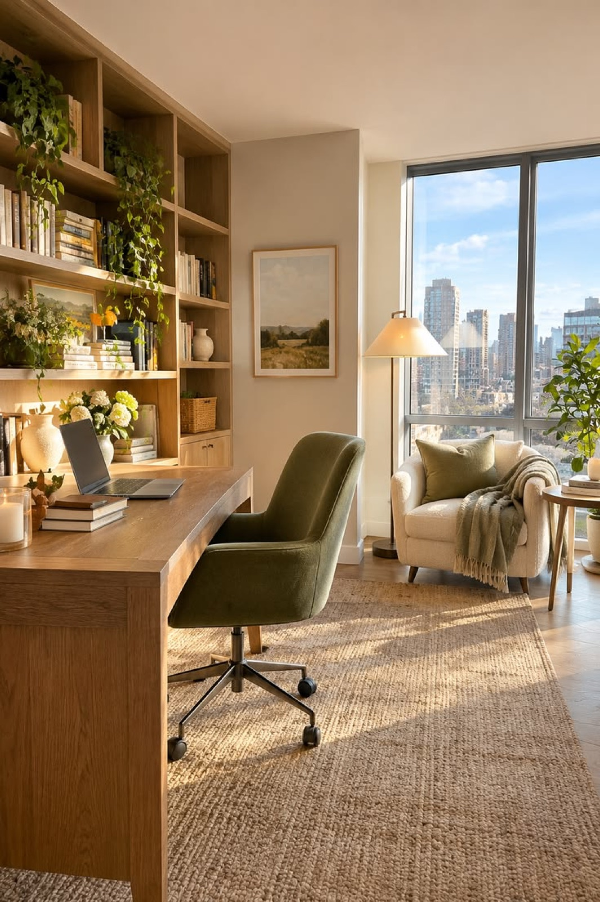
30. Look for an Antique Under 48 Inches
An antique desk gives a small office some history. Look for one under 48 inches wide at a flea market or estate sale.
Check that the drawers slide and the top is not warped before you pay. A light sanding and a coat of oil fix surface wear.
A patterned rug and a woven chair soften the wood, and sage paint ties the room together.
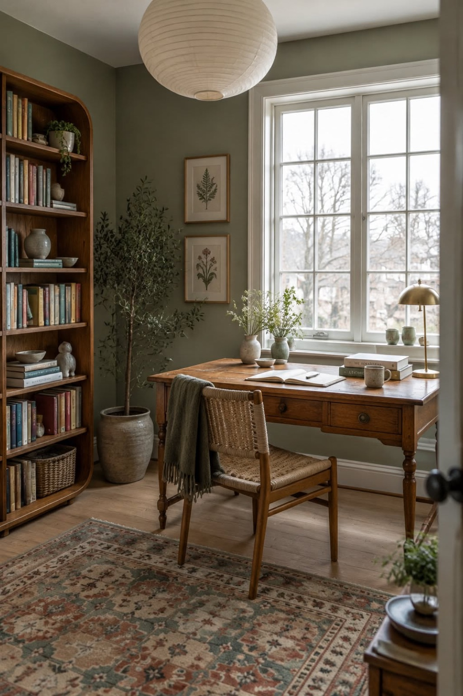
31. Turn the Desk to the Light
A built-in with warm lighting finishes a room. Fill about two thirds of the shelves and leave the rest empty.
Turn the desk perpendicular to the window so light falls on your side, as here.
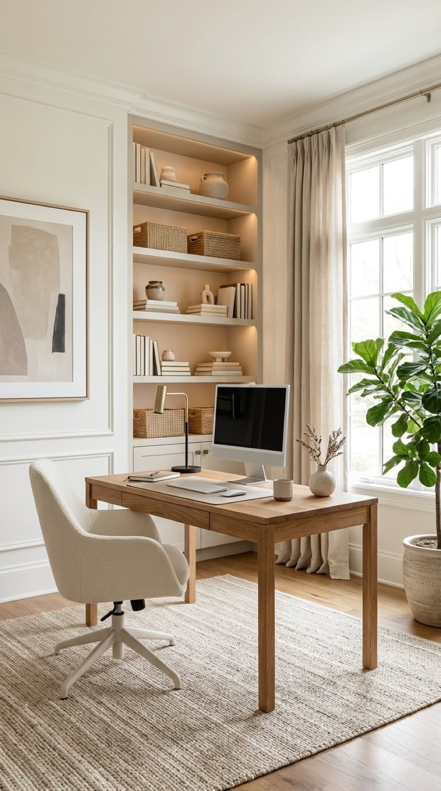
Common Mistakes (and Fixes)
- Mistake: a desk bigger than the nook. Fix: tape the footprint on the floor first and leave 36 inches behind the chair.
- Mistake: the screen facing a window. Fix: turn the desk so the window sits at your side.
- Mistake: relying on the ceiling light. Fix: add a task lamp with a bulb between 2700K and 3000K.
- Mistake: cords on display. Fix: use a cable box and adhesive clips along the underside of the desk edge.
- Mistake: buying a chair for its photo. Fix: sit in it for ten minutes first. Look for adjustable height and lumbar support.
Where to Start
You do not need a spare room. Start with a desk that fits the wall, a chair you can sit in for hours and a lamp on the correct side.
Leave the color and the art for last. A desk that works comes first, and pretty follows.